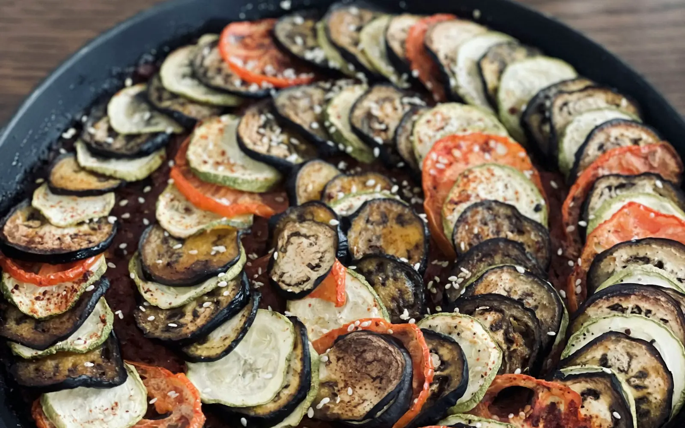

Europe · France
Ratatouille
Garmiyon ki sabziyon ki rangeen French dish.
Time60 min
LevelMedium
SpiceMild
Serves4
100% vegetarianVeganGluten-free
Your rating
What you need
People4
How to make it
- 1
Kata pyaaz, lehsun aur shimla mirch bhuno. 2 kate tamatar daal kar sauce banao. 10 min
- 2
Baking dish mein sauce phailao.
- 3
Baingan, zucchini aur bache tamatar patle kaato.
- 4
Tukdon ko gol ghuma kar sajao. Tel, oregano aur namak lagao.
- 5
180°C pe dhak kar bake karo, phir khol kar sunehra karo. 45 min
Photo: Marjan Sadeghi · Unsplash License
More from Europe
 ItalyMedium
ItalyMedium
Karare base pe tamatar, mozzarella aur basil.
40 minMedium☆☆☆☆☆MildServes 4
View Recipe SpainEasy
SpainEasy
Dhuandaar teekhi tamatar sauce mein karare aloo.
40 minEasy☆☆☆☆☆SpicyServes 4
VeganGluten-free
View Recipe PolandHard
PolandHard
Aloo aur paneer se bhari Poland ki aadhe chaand jaisi dumplings.
70 minHard☆☆☆☆☆MildServes 4
Vegetarian version
View Recipe 0:00